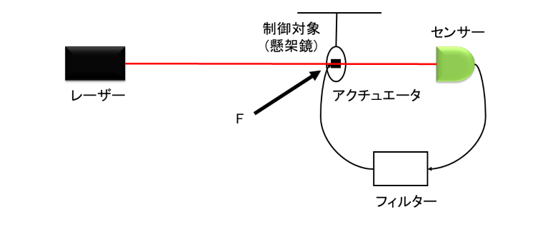

フィードバック制御系の安定性
今回の最終目標は懸架鏡のフィードバック制御系を理解することでした。これからそのことについて2回に分けて説明していきます。
まず、制御系を以下のように設定します。
システムの設定
光源からでたレーザー光が、制御対象である懸架鏡にあたり、その変位をセンサー(光検出器)で読み取ります。読み取った信号を
フィルター、アクチュエータを通して制御対象にフィードバックされます。この時、鏡を揺らしている外乱をFとしました。
このシステムをブロック線図で書き表します。
ブロック線図
それぞれM,S,H,Aは懸架鏡、センサー、フィルター、アクチュエータの伝達関数を表しています。また、Xは鏡の揺れです。
このブロック線図より鏡の揺れXを見積もることができます。ブロック線図の規則を思い出してください。この規則につ基づいて計算をします。
\begin{align}
(-X(s)S(s)H(s)A(s)+F(s))M(s) &= X(s)\\
-X(s)S(s)H(s)A(s)M(s)+F(s)M(s) &= X(s)\\
X(s) = \frac{M(s)}{1+M(s)S(s)H(s)A(s)}F(s)
\end{align}
このように鏡の揺れXを見積もることができました。ここで、分母の+M(s)S(s)H(s)A(s)に注目してください。
これは、一巡伝達関数(開ループ伝達関数、オープンループ伝達関数)と呼ばれるものです。この周波数応答が、フィードバック制御系の安定性を評価するために用いられるのです。
それでは、実際に一巡伝達関数を求めてみましょう。式からわかるように、制御系の各伝達関数の積になっているので、1つ1つの伝達関数を求めることができれば、一巡伝達関数も求めることができます。
しかし、現実に全ての伝達関数の式の形がわかっていることはほとんどありません。そこで、今回は簡単のためアクチュエータ、センサー、フィルターの伝達関数は1とします。
制御対象の伝達関数のみ計算します。これは、運動方程式を立て、ラプラス変換を考えることで、具体的に求めることができます。
\begin{align}
m\ddot{x}^2 &= -m\omega_m^2 x - 2m\gamma_m \dot{x} + F\\
\Rightarrow ms^2X &= -m\omega_m^2 - 2m\gamma_m sX + F\\
M(s) &= \frac{1}{m}\frac{1}{s^2 + 2m\gamma_m s + \omega_m^2}
\end{align}
$\omega_m$は懸架鏡の共振周波数、$\gamma_m$は懸架鏡の散逸、$Q=\frac{\omega_m}{2\gamma_m}$とQ値を定義しました。
ここまでで一巡伝達関数の具体的な式がわかったので、ボード線図を見てみましょう。($Q=100,\omega_m = 10$とした)
フィルターのゲイン1のボード線図
この10rad/sのとがっている部分は、懸架鏡の共振周波数を表しています。このボード線図をもとにフィードバック制御系の安定性を評価していきます。
手順としては、まずゲインが1(0dB)となる周波数を確認します。この周波数をUGF(Unity Gain Frequaency)といいます。
次に、UGFの時の位相に注目します。この時、位相が$-180^{\circ}$からどれくらい余裕があるかを見ます。この余裕を位相余裕(PM)といいます。位相余裕は
$PM = 180^{\circ}+UGFの時の位相$で求めることができ、PMが0より大きければ制御系は安定、小さければ不安定と判断することができます。この安定判別法をナイキストの安定判別法
といいます。詳しくはおまけを参照してください。
これらを踏まえて、もう一度ボード線図を見てください。UGFは今回約15rad/sくらいです。その時の位相余裕は0となっています。つまり、この制御系は不安定であることがわかりました。
では、どのようにすれば安定するのでしょうか。それには、フィルターを工夫する必要があります。次回はフィルターを工夫し、フィードバック制御系の設計を考えていきたいと思います。